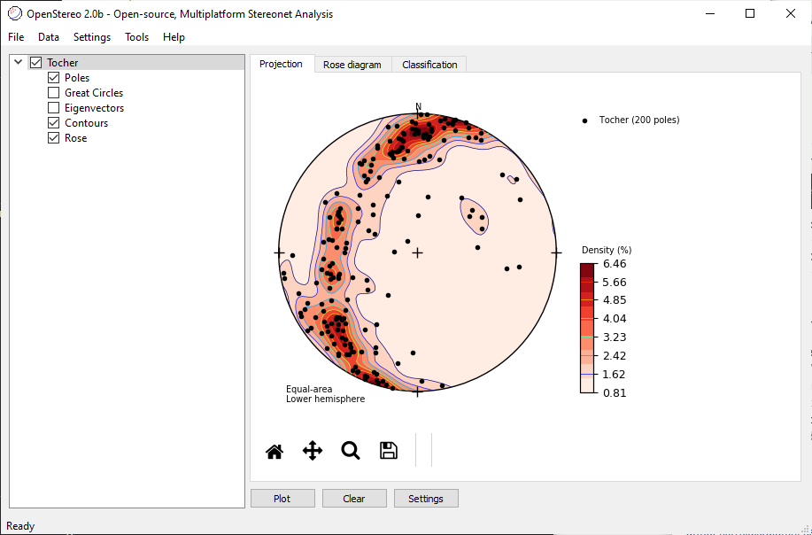
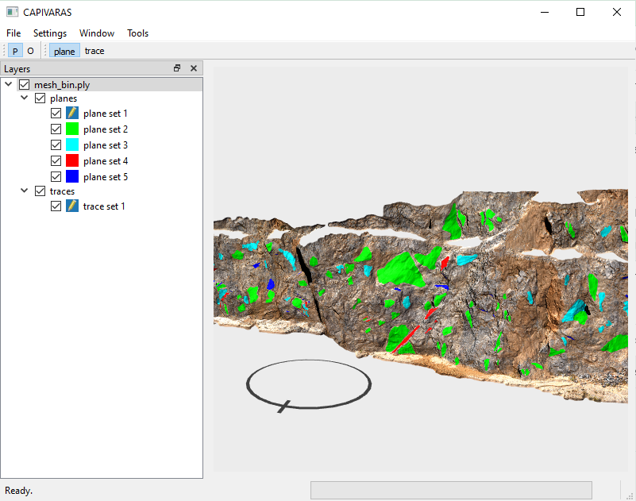
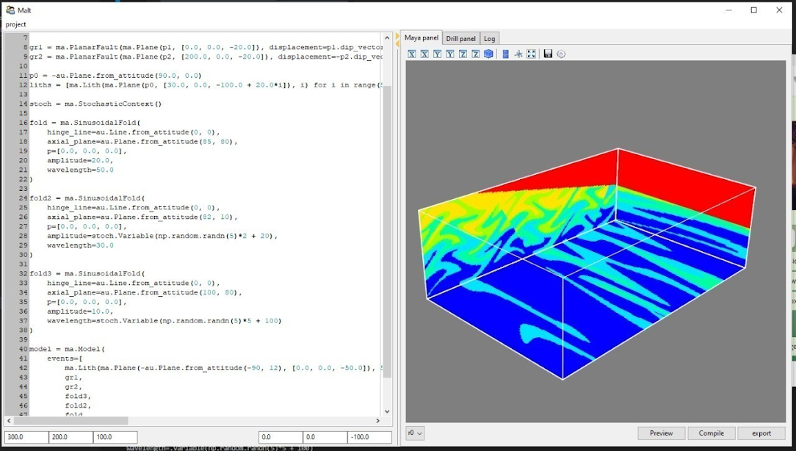
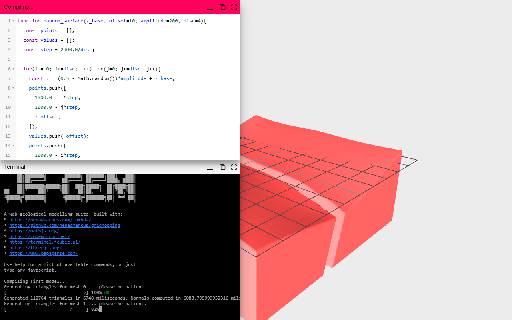

Most of this is older than the GCU's name. It starts at my master's, with desktop
tools I wrote in Python, and moves into the browser once I picked up JavaScript around
2017 — mostly to get geology into a tab (stereonets, a phone compass, drillhole tools),
partly because the browser APIs were fun to poke at.
The desktop tools are shown as screenshots, since they don't run in a browser;
everything after is collected still running, in its original state, rather
than as screenshots of dead links. A fair amount of what the GCU does now started as
one of these.
circa 2016 · before the browser
Desktop roots — the master's tools
Before endarthur.github.io existed there were desktop tools, written in Python.
The main one is OpenStereo — a GUI for directional-data and
structural-geology analysis (load orientation data, plot poles and great circles on
a stereonet, contour their density, run the statistics). It isn't mine originally:
it was created by Carlos Grohmann and Ginaldo Campanha at USP around 2010. I took it
over for the 2.0 rewrite as my master's work and still maintain it — and I built its
numerical engine, auttitude, as a separate library, which is exactly
why I could later port a slice of it to JavaScript for the browser compass and
everything that came after.
The other line is mesh analysis. Capivaras takes a photogrammetry
model of an outcrop and lets you pick surfaces straight off it on the GPU —
extracting attitudes and roughness, and tracing structures semi-automatically with
Dijkstra's shortest path over the mesh treated as a graph. It's the self-contained
successor to ply2atti and scanline. The AR-desurvey and photogrammetry experiments
later in the browser are the lightweight cousins of this.
OpenStereo 2.0b — directional-data analysis (Python)● the master's project

Poles and density contours on an equal-area net (the Tocher dataset, 200 poles).
The desktop home of auttitude — and where the stereonet thread that
runs through this whole page begins.
Capivaras — GPU-picking outcrop-mesh analysis (Python)● the mesh line

Plane sets picked straight off a photogrammetry outcrop mesh; traces by
shortest-path over the mesh-as-graph. The self-contained successor to ply2atti +
scanline.
creditOpenStereo
was created by C.H. Grohmann & G.A.C. Campanha (USP, AGU 2010); I did the 2.0
rewrite, maintain it, and built its auttitude engine. Capivaras is part of
Camila Duelis Viana's PhD; its predecessors ply2atti + scanline are from Viana (2016).
2017 · the first page
Stereonets on HTML
My first personal page. The heading — Computatro et Malleo, roughly
"by computer and by hammer" — stuck, and it's still the motto. I'd just picked
up JavaScript and wanted to see what the browser could do with structural data.
On a phone it works as a rough geological compass: device orientation drives an
equal-area stereonet, with a trigger to lock a reading. It's experimental — I
wouldn't measure anything real with it — but it's where the habit of putting
geology in a browser started.
endarthur.github.io● 2017 · runs live
The actual page, embedded and running. On a desktop it's the static stereonet
and the motto; on a phone with a compass it becomes the instrument. The sibling
os.html is a dedicated plotter.
credit Device-orientation handled with
gyronorm.js (Doruk Eker);
the stereonet maths is my own auttitude.
2017–2018 · DIGItal KOMpass
Digikom — the phone becomes the needle
DIGItal KOMpass — and despite my presenting it at TRANSFORM 2020, it's really a
2017 thing (the copyright header gives it away), the front page's very next step.
The page-as-compass was fine, but the screen sits on the same device you're pressing
against the rock. So I split it in two: the phone is the sensor, the desktop is the
display, and they talk straight to each other over WebRTC. You pair them by scanning
a QR the desktop shows — no server, no app, no accounts.
It's also where those toolbar icons live that you spotted first — the save-floppy
and the dip-pen, drawn by hand on millimetre paper and typed out as SVG paths,
coordinate by coordinate. I'd lost the source years ago; this copy was pulled back
from the deployed page, so it's preserved now, hand-drawn icons and all.
previous/digikom/ — recovered from digikom.surge.sh● 2017 · preserved
The recovered app, running from a local copy so it outlives surge.sh. On a desktop:
the stereonet, the connect-phone QR, and that hand-drawn toolbar; pair a phone and
its orientation drives the plot.
the hand-drawn toolbar — SVG typed off graph paper● 2017 · source
<g id="saveFloppy" transform="translate(82) scale(.5)">
<path d="M 0 0 H 24 L 25 1 V 26 H 0 Z" />
<path d="M 2.2 26 V 11 H 22 V 26" />
<path d="M 2.2 0 V 8 A 1 1 0 0 0 3.2 9 H 18 A 1 1 0 0 0 19 8 V 0" />
<path d="M 6 0 V 8 A 1 1 0 0 0 7 9 H 18 A 1 1 0 0 0 19 8 V 0" />
<path d="M 13 1 H 17 V 8 H 13 Z" />
<path d="M 23 23 H 24 V 24 H 23 Z" />
<path d="M 0.6 23 H 1.6 V 24 H 0.6 Z" />
</g>
<g id="toggleMarker" transform="translate(15) rotate(45) scale(.5)">
<path d="M 0 0 V 20 H 7 V 0" />
<path d="M 1.5 20 V 25 H 5.5 V 20" />
<path d="M 3 25 V 30 H 4 V 25" />
<path d="M 3 30 V 31 H 4 V 30 Z" fill-opacity="1" />
</g>
The save-floppy (with its clipped corner and the little shutter arcs) and the
dip-pen — every coordinate a whole or half integer, read straight off the grid. A
third icon, a "clear" page, sits commented-out in the original, never finished.
credit Peer-to-peer with PeerJS;
device orientation via gyronorm.js
(Doruk Eker); QR codes by qrcodejs
(David Shim); stereonet maths my own auttitude.
2019 · june
Drillhole desurvey, with the maths shown
This is the one I kept coming back to. Desurveying is the unglamorous step that
turns a drillhole's downhole survey — depth, azimuth, dip at intervals — into an
actual path in 3D, and it's fiddlier than it looks. So I wrote out the derivation
(tangent and minimum-curvature), and then, because it's easier to see than read,
built a small three.js drillhole editor next to it.
Paste a survey, set lithology intervals, watch the hole draw in 3D, export a GLB —
and that GLB feeds the AR and WebXR viewers, so you can stand a drillhole on your
desk through a phone. Maths, tool, and pipeline in one page.
endarthur.github.io/writing/desurvey.html● 2019 · runs live
The page itself — the derivation up top, the interactive drillhole editor below.
Written in 2019, tweaked through 2020: the maths didn't change, the browser APIs did.
credit Method after the drillhole-desurvey write-ups by the
Leapfrog blog
and Steve Henley;
3D + GLTF export with three.js (its official exporter example).
2019 · june 28
The stereonet calculator
Made the day after desurvey, and about as bare as it looks: an equal-area
stereonet and two number boxes. Type a plane's attitude — dip direction and dip —
and its pole and great circle move on the net as you type. That's the whole
interface, and honestly that's all I wanted: the smallest possible "see the
geometry while you enter it."
The real work was underneath. I was porting auttitude — my
structural-geology library — to JavaScript properly, as ES modules this time. Half
the source is commented-out experiments: arcs between points, small circles, plane
intersections. It's more workbench than page, and I kept it that way.
endarthur.github.io/writing/attitude.html● 2019 · runs live
Live — type an attitude in the two boxes and the plane moves, pole and great
circle. Sparse on purpose; the work was porting auttitude to JS underneath.
2019 · july
VR on a path
Exactly what it says, and yes — it's a bit nauseating. A-Frame had just made WebVR
genuinely easy, so I made a small generator: mark a path over a 3D model in MeshLab
point by point, hand it the model and the picked-points file, set a camera height
and a duration, and it spits out a standalone HTML page that flies you along that
path in VR — phone, headset, whatever. The fly-along-the-path motion itself is a
component by josepedrodias (via an answer from ngokevin) — that did most of the
real work; I wrote the part that assembles the page. Mostly I was flying through
photogrammetry models of outcrops.
There's no collision detection, so the camera will happily hug and clip through the
ground if you forget to lift it, and a quick path is a straight line to motion
sickness — the page literally suggests shrinking the model and slowing down to
cope. Janky, but I'm still fond of it.
endarthur.github.io/writing/aframe_path.html● 2019 · runs live
The generator itself — pick a path in MeshLab, give it the model and a duration,
and it downloads a standalone VR page. The flythrough (and the nausea) is the
generated output, not this form.
This one I'm fond of, even though it barely works — and the idea isn't even mine.
It's Paul Bourke's
(the same Paul Bourke whose file-format
encyclopedia half the internet has landed on at some point): as a camera rotates,
extract a narrow vertical slit from each frame and stitch the slits into a panorama;
take two slits, slightly offset, and the parallax between them gives a stereo
pair you can cross your eyes at. He traces it to the analog rotating slit-cameras —
the Roundshots and their kin.
I just wired it into a phone browser. As you turn, every time the compass ticks to a
new bearing it grabs a one-pixel strip — 720 of them for a full circle — sampling a
third and two-thirds of the way across the frame for the two eyes. getUserMedia,
device orientation, a canvas; about sixty lines, no libraries.
The catch, and you feel it instantly: it leans entirely on the phone's compass to
know where each strip belongs, and the compass is jittery and drifts. So unless
you've got a very stable rotating base, the columns smear and the panorama tears.
Honestly more a lovely idea than a working tool.
stereopanoramics.html — the slit-scan core● 2019 · source
const constraints = { video: { facingMode: "environment" } };
const azimuth_resolution = 720;
var disparity = 60;
var h;
var li, ri;
var plunge = new Float32Array(azimuth_resolution);
function handleSuccess(stream) {
video.srcObject = stream;
h = stream.getVideoTracks()[0].getSettings().height;
right.height = h;
left.height = h;
right.width = azimuth_resolution;
left.width = azimuth_resolution;
right_ctx = right.getContext("2d");
left_ctx = left.getContext("2d");
ri = Math.floor((h * 2) / 3);
li = Math.floor(h / 3);
window.addEventListener("deviceorientation", handleOrientation);
}
function handleOrientation(e) {
let az = e.alpha;
const i = Math.floor(
(((az + 360.0) % 360.0) * azimuth_resolution) / 360.0
);
if (plunge[i] === 0.0) {
plunge[i] = 1;
right_ctx.drawImage(video, ri, 0, 1, h, i, 0, 1, h);
left_ctx.drawImage(video, li, 0, 1, h, i, 0, 1, h);
}
}
The whole trick, give or take the camera plumbing: as the compass bearing
(e.alpha) reaches a new value, map it to a column 0–720 and, if that
column is still empty, copy a one-pixel strip of the camera frame into it — two
strips, a third and two-thirds across, for the stereo pair. That's the panorama.
Another tiny, half-finished one — the page's <title> still says
"Practical Desurvey" from whatever I copied it off. The useful idea: before you can
do photogrammetry with a phone you need the camera's field of view, and you can get
it from any object of known size and distance. I used a door — a trick I picked up
from a write-up by Forrest Johnson — and in Brazil they're usually 210 cm, so
you walk back until it just fills the frame top to bottom, measure the distance, and
FoV = 2·atan(h/2d). The calculator works it out and caches it in your browser.
The rest is the stereo-panorama trick again — slit-scan as you turn — but wrapped
onto an A-Frame cylinder, sized from that calibrated FoV, so you can look around
inside the panorama in VR. Same compass-drift problem as before; I just liked tying
the calibration to the capture.
endarthur.github.io/writing/camera.html● 2019 · runs live
The calibration half runs fine here — the door formula and the FoV calculator
(210 cm, walk back, done). The camera capture and the VR cylinder below need a
phone.
Spring 2020 — which is to say, lockdown — so I made a run of little tools for
connecting people, all under one rule: no server. A voice call
(dial), a call with screen-share (com), plain screen
sharing (screen), live location on a map (location). Each
works the same way: you send someone a link, and the link itself carries everything
needed to connect, peer-to-peer over WebRTC. No accounts, nothing to sign up for.
The trick that makes it serverless is this little page, store: open it
with some data packed into the URL fragment and it drops that data into the
browser's storage, or broadcasts it to your other tabs, and closes itself. The link
is the channel — that's the keystone the rest stand on, in about twenty
lines. (I came back to the same idiom in 2023 for a deadman's switch: a tab that
pings a webhook if it ever goes quiet.)
tools/store.html — the serverless keystone● 2020 · source
if (window.location.hash) {
const encodedData = window.location.hash.substring(1);
const decodedData = decodeURIComponent(encodedData);
const parsedData = JSON.parse(decodedData);
switch (parsedData.target) {
case "local":
window.localStorage[parsedData.key] = parsedData.data;
break;
case "session":
window.sessionStorage[parsedData.key] = parsedData.data;
break;
case "broadcast":
const bc = new BroadcastChannel(parsedData.channel);
bc.postMessage(parsedData.data);
default:
break;
}
if (parsedData.close) {
window.close();
}
}
The entire page, give or take the boilerplate. Pass it state through the URL,
it stores or broadcasts it — no server in the loop. Everything else just adds
WebRTC on top.
endarthur.github.io/tools/location.html● 2020 · runs live
Live location on a Leaflet map, shared peer-to-peer through a link — no server ever
holds your position. Like the rest, it wants a peer on the far end to do its thing.
This is the one I find genuinely audacious. ECMAltine is a tiny language
for building geological models — the browser port of Malt, a
forward-modelling library I'd been writing in Python. You write planes, faults,
folds and lithologies as composable functions — a plane is a normal vector, a surface is a signed-distance
field, a fault is a function that offsets space on one side of itself, a fold is a
sinusoidal warp of the coordinate — and Model([...]) threads a point
through all of them in order, returning the rock code at that location. Geological
history as a pipeline of space-deformations, which is how structural geology
actually composes.
Press run and it evaluates that model across a 128×128×128 grid — two million points
— and bakes the result into a 3D texture: a voxel block model, the same
object BMA chews on today. A hand-patched three.js shader then samples that texture
along cutting planes you can drag through the scene, so you slice live cross-sections
of your geology. A REPL for structural modelling, in a browser tab, around 2020.
And it didn't stop here. A couple of years on I rebuilt it as jsgem,
running the implicit model through a marching-cubes worker into actual 3D
meshes instead of sampled sections — GemPy-in-a-browser, properly. For years
I thought that one was gone (never committed, surviving only in a conference
recording) — but it wasn't. It's the next entry, recovered and running. The line
doesn't end on a loss after all.
endarthur.github.io/tools/ECMAltine.html● circa 2020 · runs live
Live — the DSL editor on the left, the model's cross-sections on the right. Edit the
geology, press run, drag the section planes through the result. (Open it full-screen
for the real thing; the controls are listed across the top.)
the malt engine — geology as functions● circa 2020 · source
function PlanarFault(plane, point, displacement, footwall_movement = false) {
const faultSurface = PlanarSurface(plane, point, footwall_movement ? -1.0 : 1.0);
return (X, v) => {
if (faultSurface(X) > 0) {
X.add(displacement);
}
return [X, v];
};
}
function SinusoidalFold(hinge, axial_plane_normal, point, amplitude, wavelength) {
const axial_trace = new THREE.Vector3()
.crossVectors(axial_plane_normal, hinge)
.normalize();
const axialPlane = PlanarSurface(axial_plane_normal, point);
return (X, v) => {
X.addScaledVector(axial_trace, amplitude * Math.sin(axialPlane(X) / wavelength));
return [X, v];
};
}
function Lith(surface, code) {
return (X, v) => [X, surface(X) > 0 ? code : v];
}
function Model(events) {
return (X) => {
let code = 0;
for (let i = 0; i < events.length; i++) {
[X, code] = events[i](X, code);
if (code !== 0) break;
}
return code;
};
}
Every event is a function (X, v) => [X, v]: a fault displaces space
on one side of itself, a fold warps the coordinate by a sine, a lithology stamps a
rock code, and Model threads a point through them all. Geology as a fold
of functions — the same insight GemPy encodes, hand-built here.
Malt — the Python parent (forward-modelling library)● the original

Where it came from: Malt, the desktop Python original — the same algebra
(ma.PlanarFault, ma.SinusoidalFold, ma.Model),
a Maya-style panel, and the model rendered as a solid 3D block. ECMAltine is its
browser port; jsgem (next) became its meshing successor. (Screenshot from a 2021 portfolio.)
credit 3D with three.js; the
live editor is CodeMirror + tern + acorn
(Marijn Haverbeke), linted by JSHint.
2022 · recovered 2026
jsgem — the one we got back
This is where ECMAltine was headed: jsgem (or js-gem) runs the same
Malt kernel, but instead of slicing cross-sections it threads the model through a
marching-cubes worker and builds an actual 3D mesh — GemPy-in-a-browser,
properly. A live editor, a terminal, and a meshed geological body you can orbit. I
made it around 2022.
And then I lost it. It was never committed; for years it survived only in the
TRANSFORM conference recording. Until it didn't — in June 2026 it surfaced as a
single uncommitted file on an old hard drive, was recovered, and ran again, meshing
geology in the browser for the first time in four years. The image below is that run.
jsgem — recovered & running● 2022 · alive again

112,764 triangles for the first lithology, building the second — the implicit model
in the editor (left), marching-cubed into a solid body (right). Recovered from one
uncommitted copy and run again, four years on.
endarthur.github.io/tools/jsgem.html● run it yourself
The recovered suite, live (it builds the default model on load — give the marching
cubes a moment). Goes live once the recovery commit is deployed.
credit Meshing via
gridhopping (marching cubes, by
Nenad Markuš); 3D with three.js; editor
CodeMirror; terminal
jQuery Terminal; plus math.js, DanfoJS,
PapaParse, WinBox. The ECMAltine.js Malt kernel is my own.
still out there
That's the timeline — desktop roots through 2022, and the lost capstone brought home.
One thing's still missing: an Alexa skill
from around 2019 that did stereonet maths by voice, on auttitude. Its code
didn't surface on the old drives; it may yet be recoverable from an Amazon developer
account. The hunt continues. Named, not silenced — and, this time, mostly found.